| 日付 | 2026年4月30日（木） |
|---|---|
| メンバー | 家族（妻） |
| アクセス | 電車 |
日本の三角測量は2つの点から始まった。
この2つの点を結ぶ線は相模野基線と呼ばれている。
この2点間の距離を正確に測り、そこから三角測量を行って
日本全国に一等三角点を設置していった。
この測量のベースとなった相模野基線を歩いてみることにする。
北上ルートを選択。南林間駅から出発する。
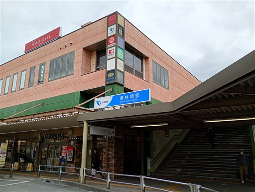
最初は街中を歩いていく。
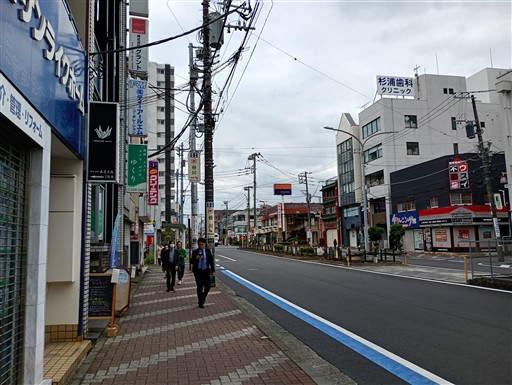
一条通りから続いて、十条通りに到着。
京都のような道路の名付け方だが、交差する道は全て生活道路の細い道だ。
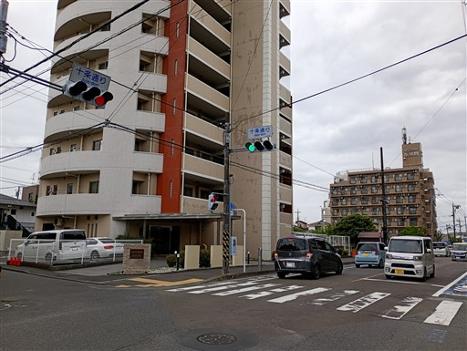
相模野基線の南端、座間村三角点に到着。
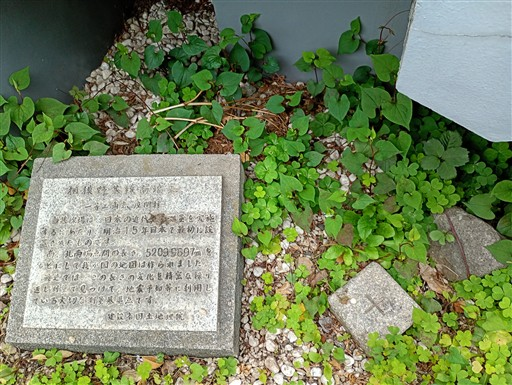
実はこの三角点、私有地にある。
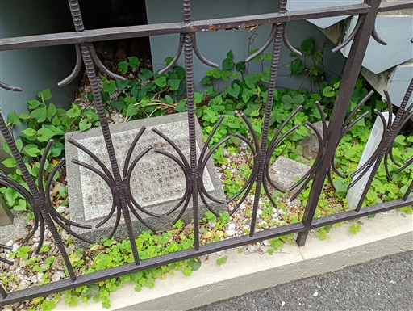
ここから北端に向かって北上する。
なんでこんなところに踏み切りが？と思ったら、試験中と書かれている。
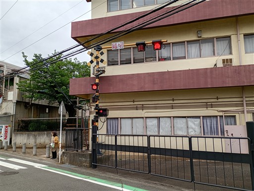
ここからはずっと緑道を歩いていく。
相模が丘仲よし小道と名付けられている。
様々な種類の桜並木が続く。
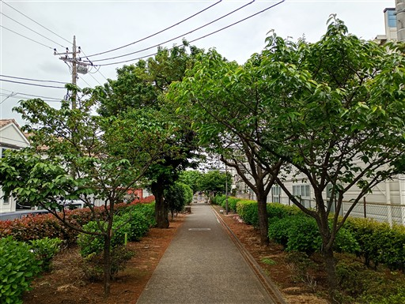
戦後に整備されたらしいが、老木が増え、近年新たに植え替えられたらしい。
切り株が一つ残っているが、確かにかなりの巨木だ。
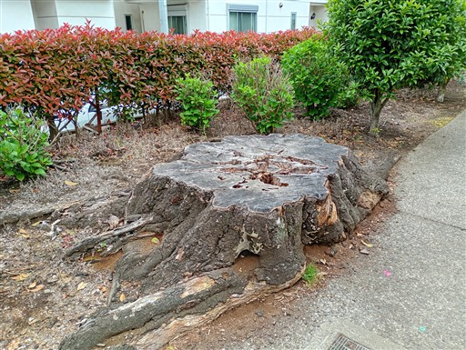
小さなサクランボがたくさんできている。
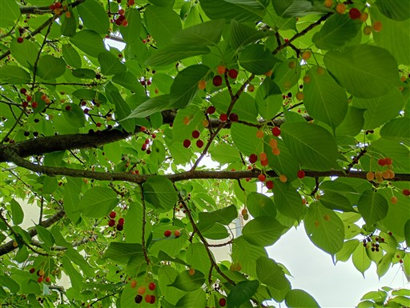
中間点に到着。
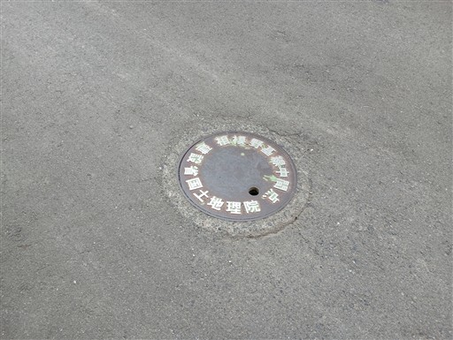
道の真ん中にマンホールと同じような形であり、全く目立たない。
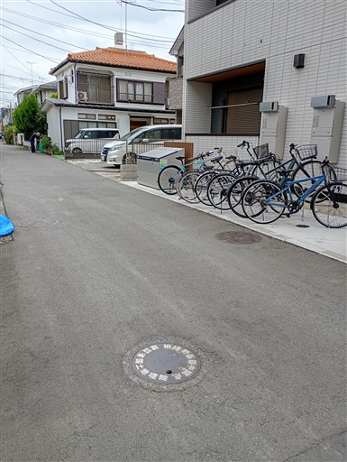
鉄道を越えて、再び緑道へ。
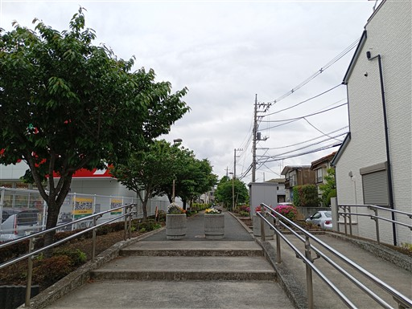
藤の花が咲いている。
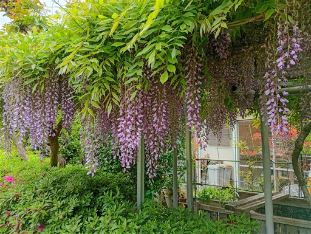
この木は老木だが、まだ切られずに残っている。
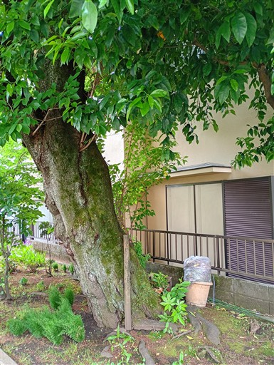
緑道はまだまだ続くが、方向がずれたのでここで離脱。
目の前に聳えるのは相模台団地。URが1960年代に造成した大規模団地だ。
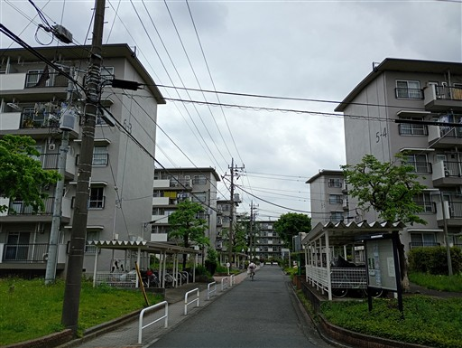
養鶏場がある。この地域は昔から有名な養鶏地帯のようだ。
ここで新鮮な卵を買うことができる。ただ、ちょっと周囲のにおいがきつめだ。
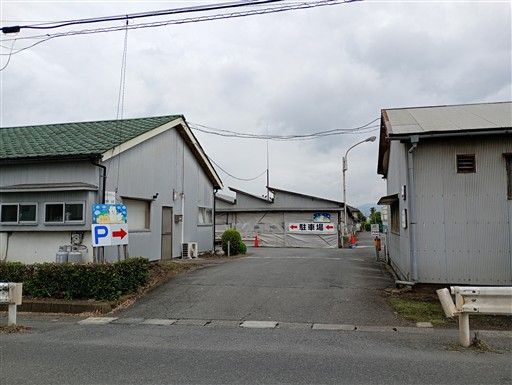
卵の自動販売機。
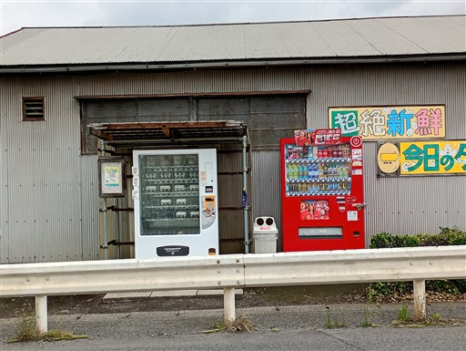
そんなこんなで北端に到着。下溝村三角点だ。
南端からの直線距離は当時、5209.9697メートルと計測された。
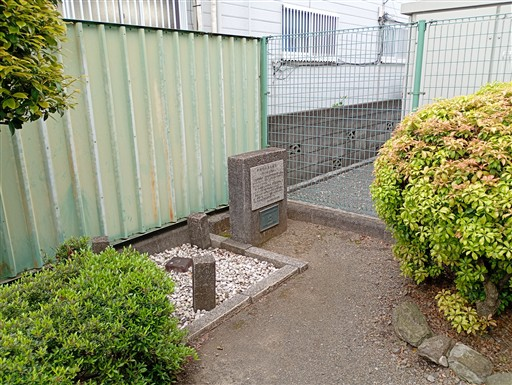
こちらは私有地ではなく、小さいけれど公園風に整備されている。
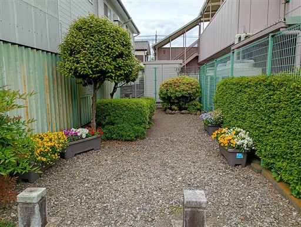
頭上にヘリコプターが飛んでいる。飛行機もよく見かけた。
近くにキャンプ座間や厚木基地があるからだろう。
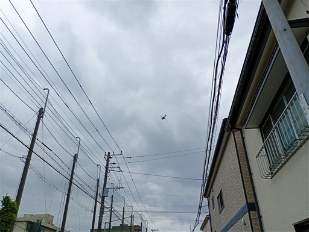
相模大野駅に向かう。
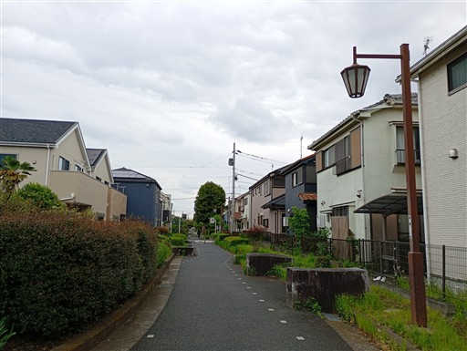
ネットを突き破って木が生長している。もうネットを取り外すことは不可能だ。
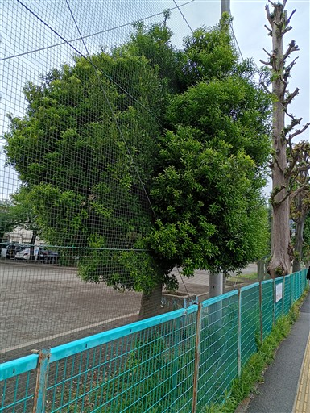
時刻はちょうど12時。ソイガパオというタイ料理屋で昼食をとる。
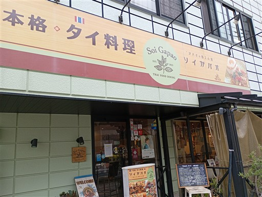
相模大野駅に到着。10kmちょっとの道のりだった。
雨が降りそうな空模様で、山には行けなかったが、歴史を感じられるウォーキングができた。
ずっと住宅街が続いたが、昔は全てが荒地だったようだ。
当時の風景がちょっと見てみたくなった。
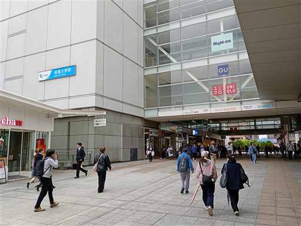